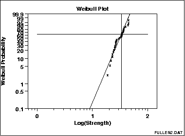

|
1. Exploratory Data Analysis 1.3. EDA Techniques 1.3.3. Graphical Techniques: Alphabetic 1.3.3.31. Weibull Plot |
|
|
Purpose: Graphical check to see if data come from a Weibull distribution |
The Weibull plot is a graphical technique for determining
if a data set comes from a 2-parameter Weibull distribution
(the location is assumed to be zero).
The Weibull plot has special scales that are designed so that if the data do in fact follow a Weibull distribution the points will be linear (or nearly linear). The least squares fit of this line yields estimates for the shape and scale parameters of the Weibull distribution. |
|
Sample Plot: |
 This Weibull plot shows that:
|
|
Importance: Check distributional assumptions |
Many statistical analyses, particularly in the field of reliability, make the assumption that the data follow a Weibull distribution. If the analysis assumes the data follows a Weibull distribution, it is important to verify this assumption and also to find good estimates for the Weibull distribution. |
| Questions |
|
|
Input: 1 Response variable Y |
There is response variable, Y, which typically contains failure times. In addition, there can optionally be a censoring variable. This variable is typically set to 1 if the item failed by the failure mode of interest and 0 of the failure mode is not of interest. |
|
Definition: Weibull cumulative probability versus log(ordered response) |
The Weibull plot is formed by:
|
|
Stat Category: Reliability, distributional fitting |
Weibull plots are used extensively in reliability analysis. They can also be used anytime an assumption is made that data are distributed as a Weibull distribution or you are simply attempting to find an appropriate distribution to model a data set. |
|
Usage: Light to moderate |
Weibull plots are common in reliability analysis. They
are seldom used outside of reliability applications.
The Weibull ppcc plot and Weibull probability plot provide the same information as the Weibull plot. We tend to recommend the ppcc and probability plot methods, but Weibull plots are widely accepted in the reliability field. |
| Reference | Nelson, (1982) "Applied Life Data Analysis", Wiley. |
| Dataplot Command | WEIBULL PLOT Y |
| Related Techniques |
Probability Plot Normal Plot PPCC PLOT |
| Case Study | xxx |